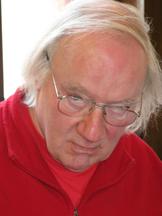

It is with sadness we have to announce the passing of Mick Birchall recently.
Mick was born, grew up, lived and worked in the Leicestershire village of Desford. He was, though, an inveterate traveller, visiting many parts of Europe and notably Italy; his love of Italy extended to its music and arts (he was a member of the Dante Alighieri Society) as well as its cuisine. Nevertheless he was also an enthusiast for English music, particularly that from before the 19th Century, which he felt was unfairly neglected.
Mick was first elected to the FRMS Committee in 2001 and was its longest-serving
member when he stepped down at the last AGM. He was Vice-Chairman for a
time but his greatest contribution to the Federation has been his many years
of service as minutes secretary, keeping scrupulously accurate records of
the Federation's business. Mick's involvement with the FRMS was not limited
to the national Committee, however. He was Secretary of Hinckley RMS, a
member of Northampton RMS and, until its closure, a member of Spalding Music
Club. Many members of societies in central England will remember regional
music days for which he was not only one of the organisers, but was often
the caterer too!
Mick is survived by a brother and sister, to whom we extend our sympathy.
(August 2021)